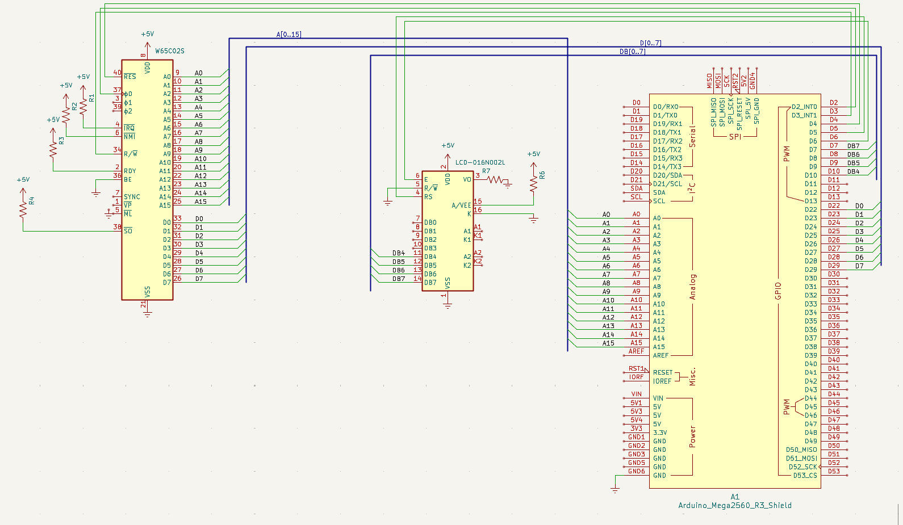

Steg 6 — Eget program i maskinkod
Mål
Ersätt NOP-slingan från steg 3 med ett riktigt 6502-program. Vi skriver en räknare som ökar X-registret från 0 till 255 och lagrar värdet på adress $0200. På LCD:n syns aktuell adress och instruktion medan serieövervakaren loggar varje minnesaccess.
6502-programmet
Programmet läggs på $8000 och består av fyra instruktioner i en oändlig loop. Varje varv ökar X-registret med 1 och sparar värdet till adress $0200. Eftersom X är 8-bitars räknar det 0→255→0→255…
| Adress | Maskinkod | Assembler | Förklaring |
|---|---|---|---|
| $8000 | A2 00 | LDX #$00 | Ladda X-registret med 0 |
| $8002 | E8 | INX | Öka X med 1 |
| $8003 | 8E 00 02 | STX $0200 | Spara X till minnesadress $0200 |
| $8006 | 4C 02 80 | JMP $8002 | Hoppa tillbaka till INX (oändlig loop) |
Notera: LDX #$00 körs bara en gång (vid start). Loopen är INX → STX → JMP, vilket är 2+4+3 = 9 klockcykler per varv.
Kopplingsschema
LCD:n kopplas direkt till Arduino — RS→D5, E→D6, DB4–DB7→D10,D9,D8,D7. CPU och Arduino delar adress- och databuss som tidigare.

Arduino-kod
Endast setup() ändras — vi byter ut NOP mot räknarprogrammet. pulse() och loop-logiken från steg 3–5 behålls oförändrad. Programmet använder 8 bytes från $8000 till $8008.
// -----------------------------------------------------------
// Steg 6 — Eget 6502-program: räknare 0–255
// -----------------------------------------------------------
// Ändra i setup() — ersätt mem[0x8000] = 0xEA (NOP) med:
void setup() {
// ... befintlig kod från steg 1–5 (pinMode, DDRx, LCD, knappar) ...
// Reset-vektor: programmet börjar på $8000
write_mem(0xFFFC, 0x00); // Låg byte
write_mem(0xFFFD, 0x80); // Hög byte → CPU startar på $8000
// === Räknarprogrammet ===
// $8000: LDX #$00 — ladda X-registret med 0
write_mem(0x8000, 0xA2);
write_mem(0x8001, 0x00);
// $8002: INX — öka X med 1 (loop-start)
write_mem(0x8002, 0xE8);
// $8003: STX $0200 — spara X till adress $0200
write_mem(0x8003, 0x8E);
write_mem(0x8004, 0x00); // Låg byte av $0200
write_mem(0x8005, 0x02); // Hög byte av $0200
// $8006: JMP $8002 — hoppa tillbaka till INX
write_mem(0x8006, 0x4C);
write_mem(0x8007, 0x02); // Låg byte av $8002
write_mem(0x8008, 0x80); // Hög byte av $8002
// Reset-sekvens
digitalWrite(RESB, LOW);
for (int i = 0; i < 5; i++) pulse();
digitalWrite(RESB, HIGH);
}
// pulse() och loop() — oförändrade från steg 3–5
// Knapparna från steg 4 styr fortfarande exekveringen
// LCD:n uppdateras efter varje klockcykelTestning
- Ladda upp den modifierade koden till Arduinon
- Tryck på Knapp 1 (klocksteg) — se CPU:n stega genom instruktionerna en klockcykel i taget
- Tryck på Knapp 2 (instruktionssteg) — hoppa till nästa instruktion
- LCD:n visar aktuell adress (t.ex.
A:8003) och instruktion (t.ex.D:8E)
Vad har vi lärt oss?
6502-instruktioner är 1–3 bytes långa. CPU:n läser opcode först, sedan operandbyte(s). INX är 1 byte (enbart opcode). STX $0200 är 3 bytes (opcode + 2-byte adress).
Minnesmappad visning: genom att skriva till $0200 kan vi se CPU:ns interna registervärde på databussen — en enkel form av I/O utan extra kretsar.
Maskinkodsprogrammering: vi skrev ett program direkt i maskinkod (hex-bytes). I praktiken används en assembler för större program, men att förstå den manuella översättningen är ovärderligt vid felsökning.